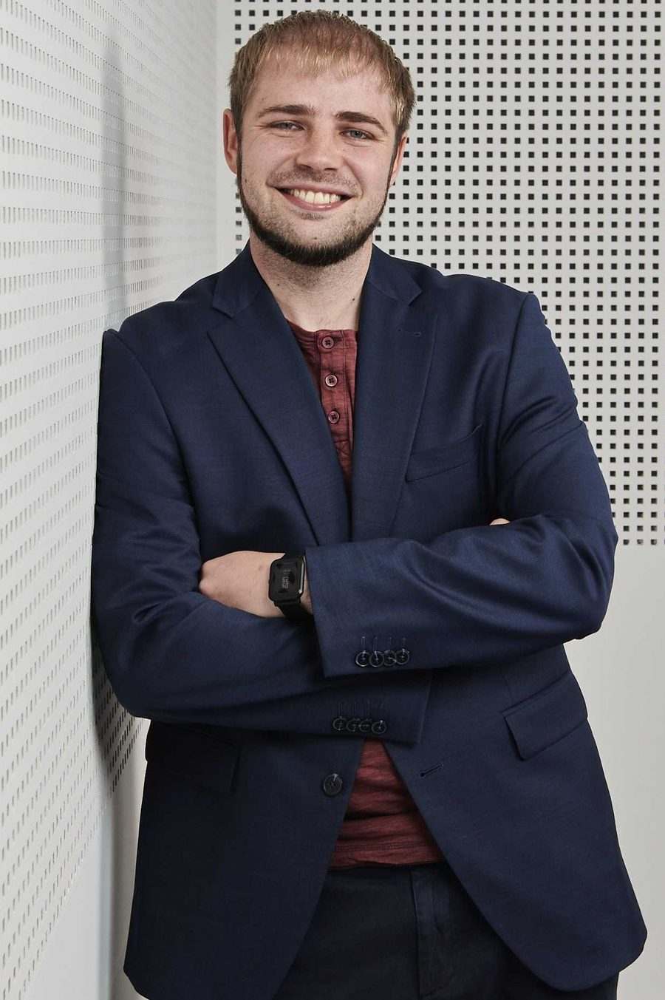
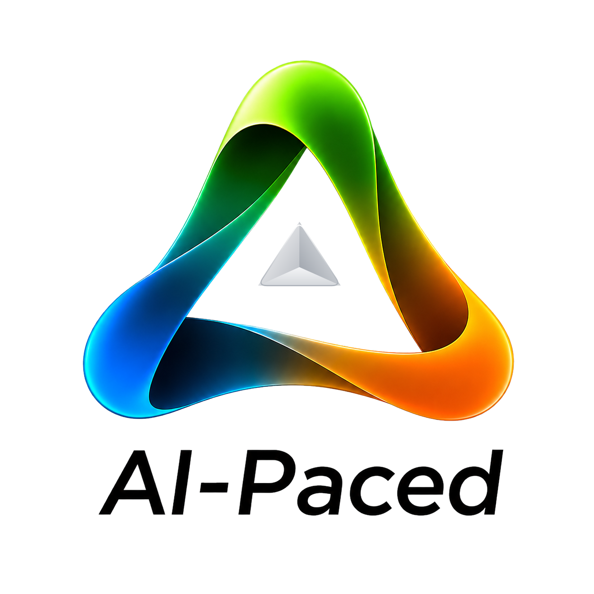
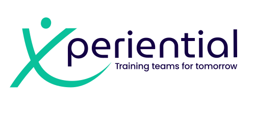
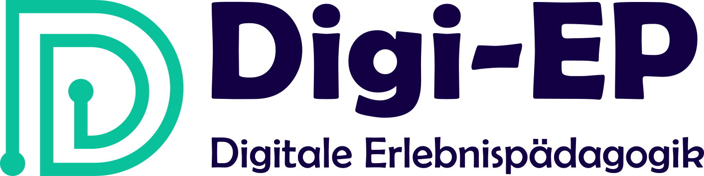

Organisationen im KI-Wandel
Strukturierte Organisationsentwicklung mit Bremsfaktoren-Analyse, Toolbox und Begleitung. Für den Mittelstand, der im Takt der KI handlungsfähig bleiben will.
ai-paced.de →
Jonas Grünewald
Eine Entwicklung, drei Marken. Vom spielerischen Lernen mit Kindern bis zur strukturierten Organisationsentwicklung im KI-Wandel.

Organisationen im KI-Wandel
Strukturierte Organisationsentwicklung mit Bremsfaktoren-Analyse, Toolbox und Begleitung. Für den Mittelstand, der im Takt der KI handlungsfähig bleiben will.
ai-paced.de →
KMU und Startups
Erfahrungsbasiertes Lernen für Teams: Trainings, Kulturworkshops, Coachings und Teamevents.
xperiential.de →
Bildung
Digitale und analoge Erlebnispädagogik für Schulen, Kommunen und gemeinnützige Organisationen: Lehrkräfte und andere Betreuungspersonen ausbilden, Kinder und Jugendliche fördern.
digiep.com →Viele Einflussfaktoren haben geprägt, wie ich auf Entwicklung blicke. Als Trainer in unterschiedlichen Sportarten habe ich verschiedenste Ansätze mitgenommen. Videogestützte Spielanalyse, Motivation und Teamgeist im Fußball, Volleyball als "Fehlervermeidungssport", hohe Sicherheitsanforderungen im Tauchen und Klettern, methodischer Aufbau von Lernreihen beim Turnen und viele mehr. Ich habe gelernt, jeden beliebigen Lerninhalt in kleine, beherrschbare Schritte herunterzubrechen und diese mit Freude zu lehren.
Das erfahrungsbasierte Lernen geht noch eine Ebene tiefer. Menschen erleben etwas, bestehen gemeinsam Herausforderungen und reflektieren danach gemeinsam die Zusammenarbeit und angewendete Strategien. So werden Muster erkennbar, die im Wortsinn "erinnerungswürdig" im Kopf bleiben und den Transfer in den Alltag ermöglichen.
Besonders die Arbeit mit Kindern macht eigene Führungskompetenzen erlebbar. Manchen fehlt der "Filter der sozialen Erwünschtheit" und sie sind gnadenlos, wenn man nicht performt. Langweilt man sie, sendet widersprüchliche Signale oder ist inkonsequent, merkt man deutlich, was Erwachsene vor einem verstecken würden.
Und schließlich fließen Mechanismen aus digitalen und analogen Spielen in den Erfahrungsschatz ein, deren grundlegende Prinzipien auch auf die Steuerung von Einzelpersonen und Gruppendynamiken angewendet werden können.
Diese Entwicklung habe ich selbst durchlaufen. Was als Erlebnispädagogik mit Kindern begann, ist über Teamarbeit mit Startups zur Organisationsentwicklung gewachsen. Jede Stufe trägt die nächste. Genau das biete ich heute an: keine vermeintlich schnelle Lösung, sondern den nachhaltigen Weg zur Weiterentwicklung.